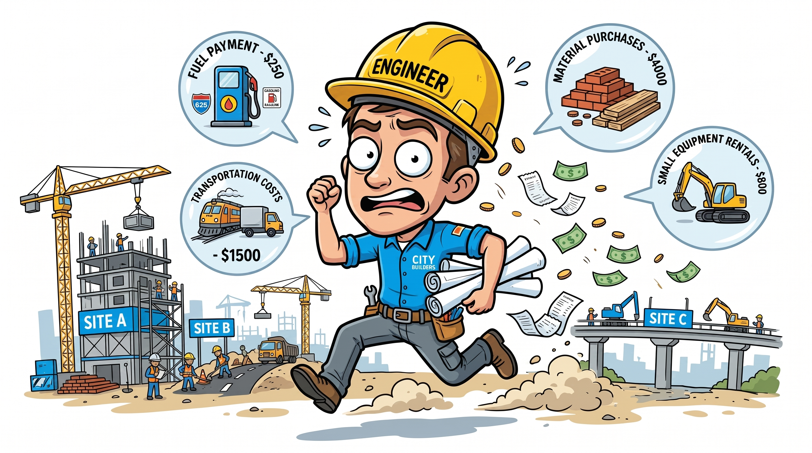
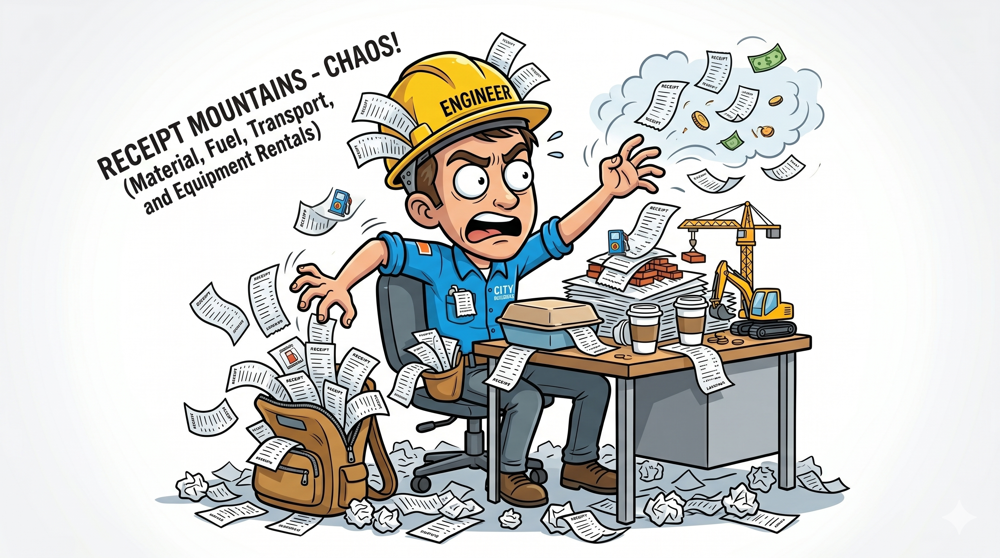
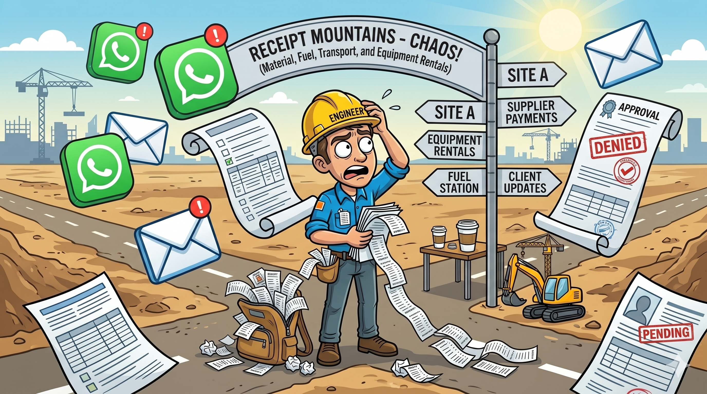
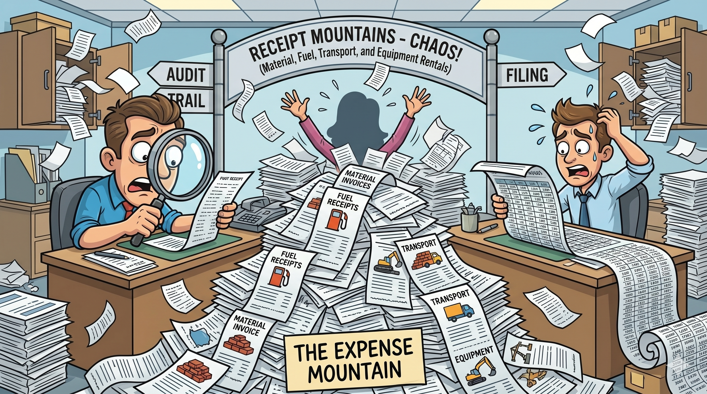
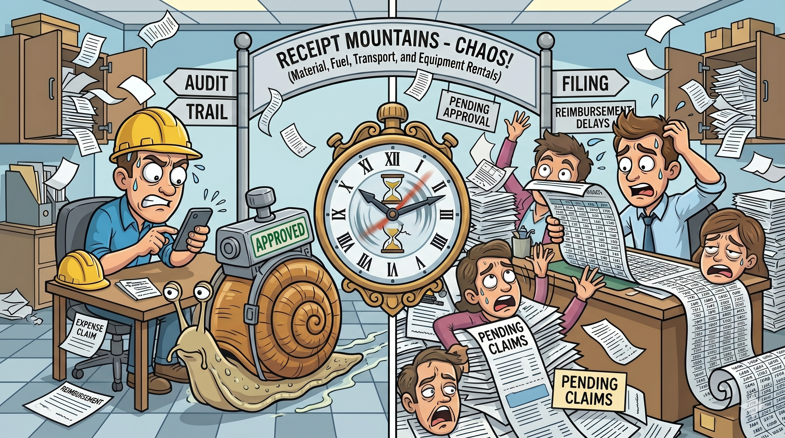
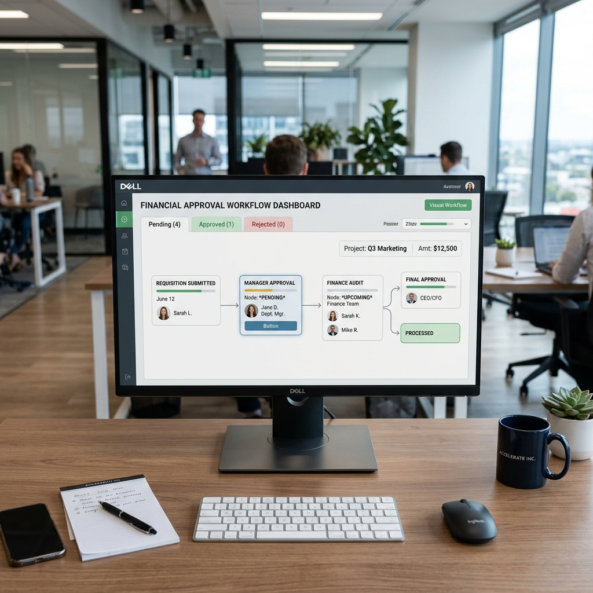
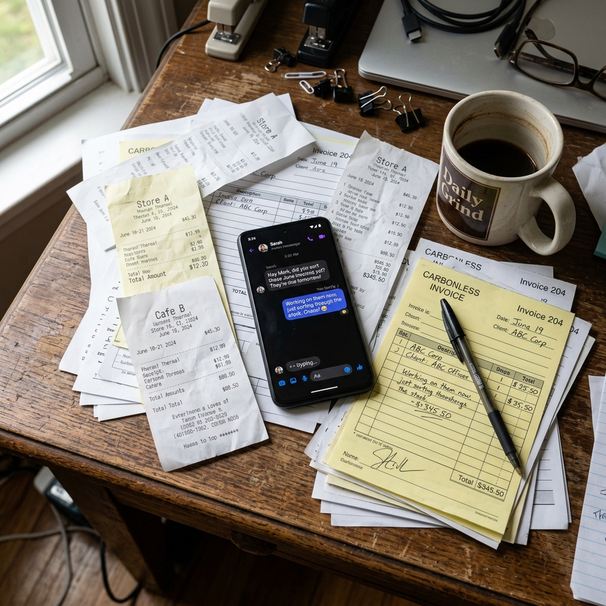
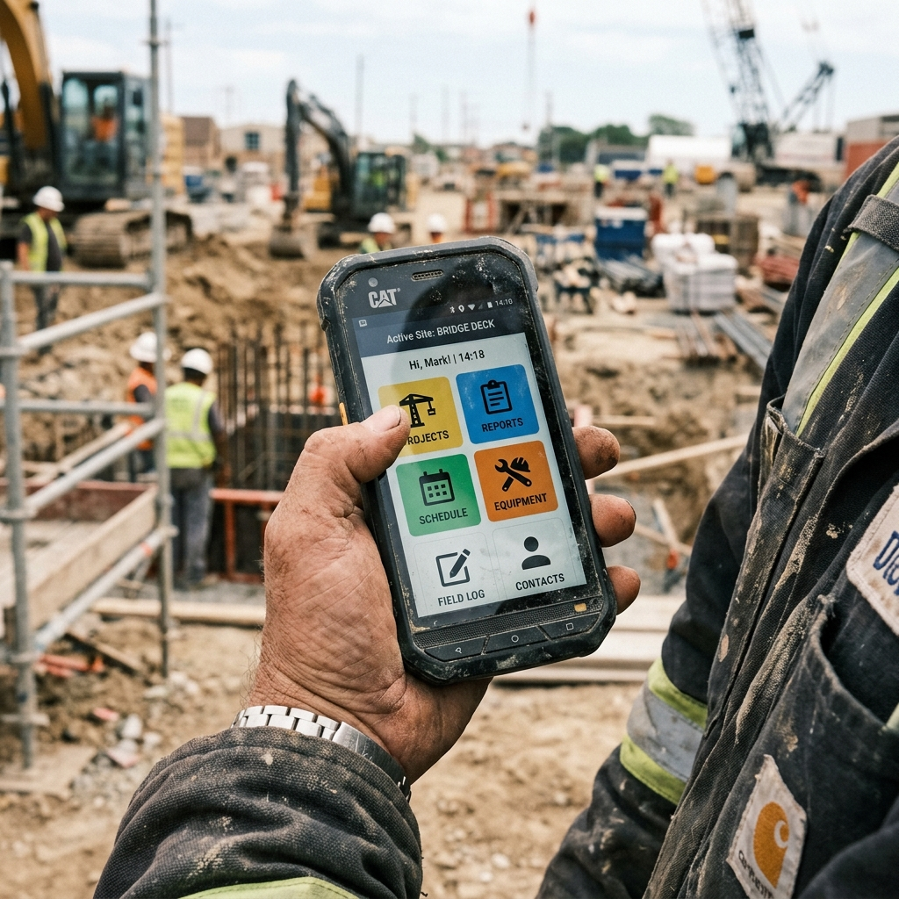
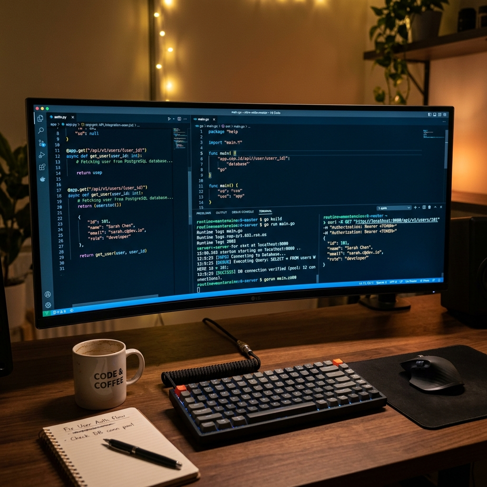
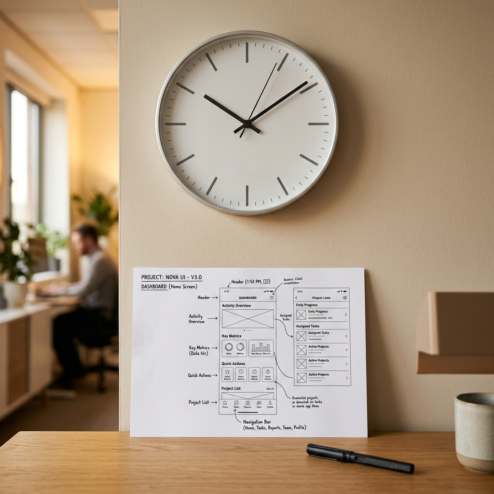

Cendrol: Streamlining expense workflows for field engineers
Cendrol Construct manages distributed on-site building operations. Site engineers submit hundreds of expense claims weekly for local materials. The existing workflow was chaotic, filled with illegible receipts, missing invoices, and prolonged approval lag that stalled site work.





Engineer spends money
Site engineers purchase local construction materials directly in the field to prevent project delays.
Receipts pile up
Dozens of paper receipts and handwritten merchant invoices build up rapidly throughout the week.
Submission becomes confusing
Sharing low-quality, blurry receipt captures over chat channels results in lost records and details.
Finance team struggles
The central billing team manually cross-checks, validates, and key-enters details from fragmented sources.
Reimbursement gets delayed
Prolonged validation cycles and manual processing bottlenecks leave site engineers waiting weeks for refunds.
Design Reality Check
Designing for construction operations required shifting from clean laboratory assumptions to the messy, high-friction reality of on-site building environments. We had to design around six unyielding operational constraints:
Dust & Dead Zones
Engineers operated across 50+ remote construction sites with highly inconsistent internet connectivity. Offline-first resilience was a functional mandate.

Departmental Matrix
Expense approvals spanned site managers, central billing desk audits, and CFO sign-offs. The design needed to coordinate multi-departmental approvals.

Paperwork & Chats
Site operations were heavily reliant on physical receipts, handwritten invoices, and messy WhatsApp threads. Reconstructing this required capturing unstructured data.

Varying Skill Levels
On-site engineers had diverse technical backgrounds. The interface required ultra-simple capture states, large buttons, and high-visibility guides.

Legacy ERP Bindings
All expense claims had to flow directly into the company's pre-existing ERP and accounting database systems, maintaining operational consistency.

3-Month Launch Window
With limited developer hours and a tight 3-month release timeline, design concepts had to prioritize high-leverage UX patterns that were quick to build.
Simplifying expense tracking
Making submissions easier to manage
Expense submissions were spread across multiple stages, making tracking difficult during active site operations. The experience was redesigned to simplify submission flows and reduce operational friction during reimbursement requests.
Designing for admin-side tracking and approvals
Managing reimbursements across distributed project sites often felt fragmented. The redesigned experience surfaced approval progress, reimbursement status, and pending actions more clearly.
Improving reimbursement visibility
Engineers often struggled to understand approval status after submitting expenses. The system introduced clearer reimbursement states and approval visibility across the workflow.
Creating clearer reimbursement workflows
Reducing confusion across approval stages
The earlier workflow lacked clear progression between submission, approval, and reimbursement stages. We introduced structured workflow states that helped engineers understand where requests stood within the process.
Stage 1 (Submitted): Your invoice images have been submitted and are queued for central accounting desk audits.
Making reimbursement progress easier to follow
Managing reimbursements across distributed project sites often felt fragmented. The redesigned experience surfaced approval progress, reimbursement status, and pending actions more clearly.
Designing for faster operational clarity
Improving usability across distributed operations
The experience was designed to support quicker tracking, easier navigation, and reduced workflow friction across operational environments. Clearer layouts, status visibility, and structured interaction patterns improved scannability during day-to-day operations.
The Cendrol expense claims redesign successfully transformed a slow, chaotic accounting loop into a streamlined, high-efficiency operational tool.
Scaling operational throughput across regions.
Relieving receipt reconciliation overhead and workflow lag allowed Cendrol to shrink operational expense processing cycles from 18 days to 3 days, reducing inventory delays by 60%.